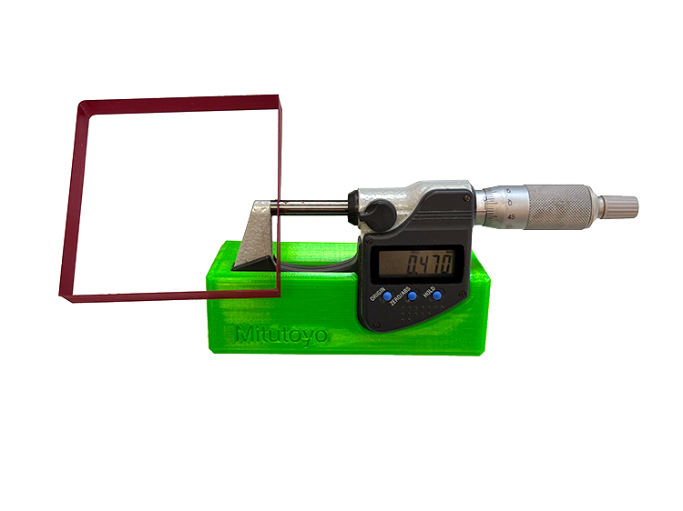

We recommend a micrometer instead of a caliper for the following steps. Calipers are not precise enough to measure such small values and a micrometer has a ratchet system made to apply same pressure for all measures.
If you still want to use caliper, make sure to always use the same pressure when you measure and don't press too strongly.
Proceduere
First measure the diameter of the filament. measure at several places and calculate the average.
 |
|||
|  | |